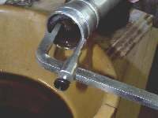
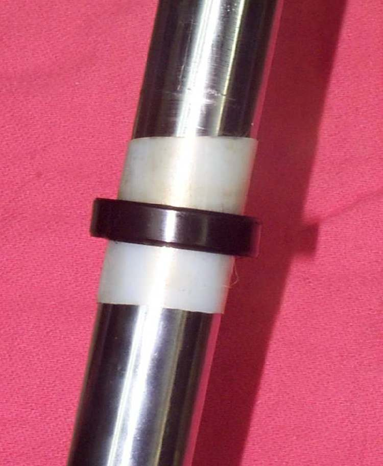

New seals were fitted and oil shows on the fork leg within days or weeks. Most causes are about the way the seal went in or the state of the tube. A new seal cannot work on a rough or damaged tube.
Is it safe to ride?
With care if the leak is small and none reaches the brake disc or pads. If oil reaches the brake, do not ride until the disc is cleaned and oily pads are replaced.
Quick checks first
- Wipe the leg clean and ride a short distance. See where the oil appears first.
- Run a fingernail along the tube. Pits, scratches or rust catch the nail.
- Check the dust seal sits on top of the oil seal and is not folded.
- Check that the oil level is not above the manual's level.
Diagnose it step by step
1Is the leaking tube dinged, pitted or rusty where the seal slides?
- Yes: the tube is damaged and will wear any new seal. Replace the tube. Gaiters or boots can protect new tubes from dirt and stones.
- No: go to step 2.
2Was the seal fitted square and the clip fully in its groove?
- Unsure or no: take the leg apart and check. See Fit a fork seal square without damaging it.
- Yes: go to step 3.
3Was the seal lip protected with a sleeve over the tube end and greased as it passed the groove?
- No: the lip may have been cut. Replace the seal.
- Yes: go to step 4.
4Is the oil level or the amount of oil too high?
- Yes: extra oil builds pressure and can push past the seal. Set the level again (Set the fork oil level with a simple gauge).
- No: go to step 5.
5Does the oil seem to come from the bottom bolt or the cap, not the seal?
- Yes: check the bolt washer and the cap seal. See Undo the fork damper bolt when the rod spins.
- No: take the bike to a workshop to check the bush, the seal seat and the tube straightness.
Causes, most likely first
| Cause | How to confirm | Fix |
|---|---|---|
| Pitted or dinged tube | Nail catches on the tube | Replace the tube |
| Seal fitted crooked or cut | Leak starts at once, seal looks tilted | Refit with a new seal |
| Oil too high | Oil weeps at the seal and cap | Set the correct level |
| Dirt behind the dust seal | Grit under the seal | Clean fork seals |
| Leak from the bottom bolt or cap | Oil starts at the bottom or top | Replace washer or cap seal |